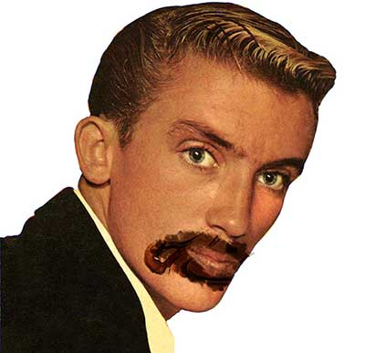
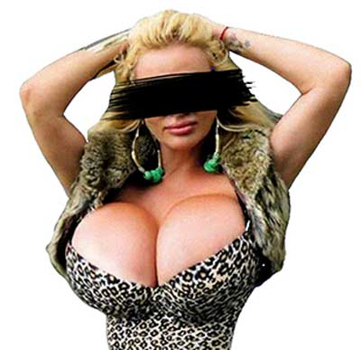
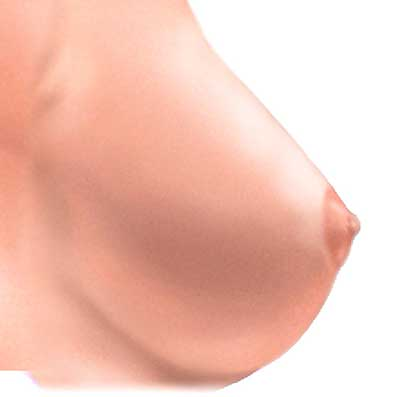
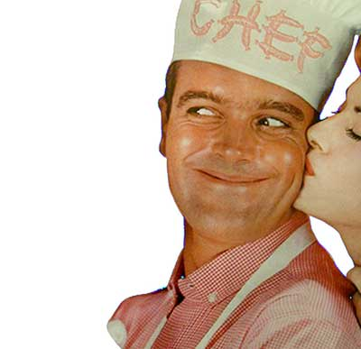
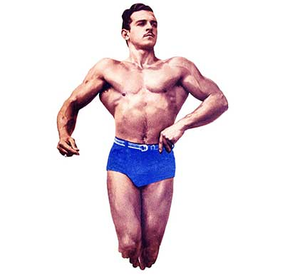
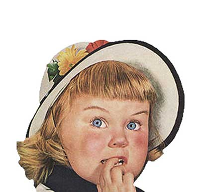

PEZONES
Después de encuestar a más de 100 heterosexuales activos bien dotados,
clasificamos, algunos de los pezones más conocidos, más o menos queridos,
pero ante todo siempre buscados.

Existen pezones rosados, morados, negros, azules, grandes, pequeños, achocolatados,
invertidos, que parecen un timbre, otros que ni para lunar alcanzan.

Pezón chocolatero
Ese pezón que parece que lo hubieran mojado en una taza de chocolate.

Ese pezón que parece que lo hubieran mojado en una taza de chocolate.
Pezón desaparecido
El que entre tanta teta ni se ve. Que parece un lunar.

El que entre tanta teta ni se ve. Que parece un lunar.
Pezón Perfecto
Según los hombres es el pezón preferido, es bonito, rosadito, perfumado y bien formado.

Según los hombres es el pezón preferido, es bonito, rosadito, perfumado y bien formado.
Pezón Timbre
Ese que casi no cabe en la boca, es un mamoncillo, es perfecto, es un pezón que dice, ¡muérdeme!.

Ese que casi no cabe en la boca, es un mamoncillo, es perfecto, es un pezón que dice, ¡muérdeme!.
Pezón Masculino
De color más oscuro, como diría mi compañera color oreo, que no es ni muy muy, ni tan, tan.

De color más oscuro, como diría mi compañera color oreo, que no es ni muy muy, ni tan, tan.
Pezón Invertido
Pezón que nace con la punta aden-tro, no es funcional. Este pezón ni a los bebes les gusta.
Pezón que nace con la punta aden-tro, no es funcional. Este pezón ni a los bebes les gusta.
Ahora que ya conoce algunos tipos de pezones, clasifique el de su pareja.
Recuerde siempre: No hay pezón que no le guste ser chupado, lo que pasa es que hay que saberlo chupar!
Lunes a Viernes 23:30 - 00:30 Puedes vernos por la señal de Claro digital Canal 717, Une digital canal 120, Cinema +